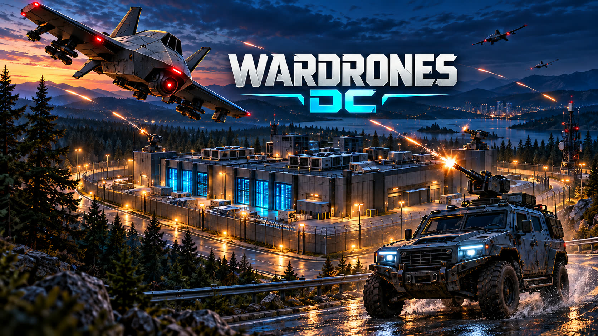

Сначала играем
Проверяем идеи в игре. Дорабатываем то, что делает следующий заход интереснее.
Мы Sangrita Tech. Придумываем игровые миры,
собираем их по частям и делимся тем, что получается.

Открыть мир Wardrones DC ↗Дата-центр под атакой. Развивай базу, выбирай оружие и сдерживай волны дронов. Каждое решение меняет следующий бой.
Знакомство с игрой ↗Проверяем идеи в игре. Дорабатываем то, что делает следующий заход интереснее.
Делимся игровыми кадрами и изменениями в Telegram. Там можно следить за развитием проекта.
Персонажи, дроны и дата-центры. Работаем над деталями, из которых складывается Wardrones DC.